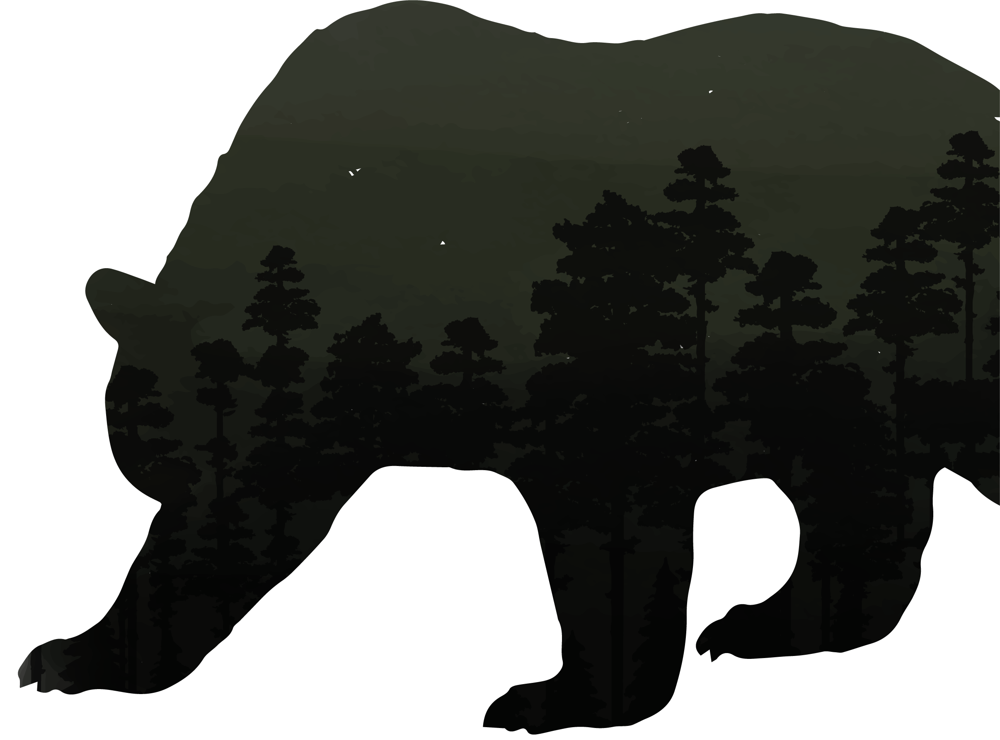

WHAT DOES A POST-NUCLEAR WORLD LOOK LIKE?


EMERGING FUTURES
ENGRGY SYSREM
SURVIVING FALLOUT
EMERGING FUTURES
ENGRGY SYSREM
SHAPING RENNEWAL
EMERGING FUTURES
ENGRGY SYSREM
NAVIGATING TOMORROW'S REBIRTH


What happens after a nuclear disaster?
Can we build something better?
Is nature best left to heal on its own?
That is why we are delving into books, data,
history, articles, and the depths of the internet
to ponder: what has happened (Chernobyl); what
could happen (Hypothetical nuclear weapon); and
what we can do (Potential solution)?


Pre-Disaster Normal Operation
Initial Reduction for Safety Test
Sudden Power Surge
Explosion and Fire
Post-Diaster
Reduced. The power level dropped more than intended
Effectively dropped to zero as the reactor was destroyed
Stable energy output level, typically around 3200 MWth
Initially increased reactivity in the lower part of the reactor core
The reactor was non-operational, with an energy output of zero